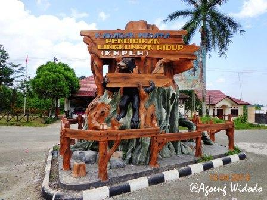

KWPLH Beruang Madu
KWPLH Balikpapan (stands for Kawaban Wisata Pendidikan Lingkungan Hidup) was previously known as an agro-tourism area, but its function has now changed. It's an environmental education facility located 23 km north of Balikpapan. The attraction now includes seven sun bears (beruang madu) which are the mascot of Balikpapan. In addition, over the years, gardens, playing ground, and facilities for outdoor have also been developed. The number of tourists are increasing every year. Most of the visitors are school children, community groups and families who want to escape the busy life of the city for a few hours. For your information, four of the seven bears were rescued from residents who kept them illegally and all the seven bears live in a 1.3 hectare artificial forest that surrounded by a fence. A boardwalk is placed high above the ground around the area. Visitors can walk around the bear habitat, which is open to the public from 09:00 to 17:00 (closed for one hour from 14:00 for feeding).
Penangkaran Buaya
All this time, crocodiles are known as a wild, savage and dangerous animals. At penangkaran buaya teritip in Balikpapan, visitors get close to them and see the movements of these amphibians. Visitors can immediately feed the crocodiles with live fish and chickens. When crocodiles fight for food, it becomes something that attracts the attention of visitors. The crocodile feeding schedules are only twice a week. However, visitors can buy a chicken for IDR 10,000 and immediately feed the crocodiles. This place has the highest number of crocodiles in East Kalimantan. Currently, there are more than 1,450 crocodiles in captivity. Thousands of crocodiles are bred in dozens of cages in an area of 5 hectares.
Hutan Lindung Sungai Wain
Clean air and clear skies are some of the precious thing right now, especially in urban cities. But not in Hutan Lindung Sungai Wain. Fresh and clean air is wafted when entering the Hutan Lindung Sungai Wain (HLSW) area which located 15 kilometers from Balikpapan. The dominant tree species in this forest include Bangkirai, (Shorea Laevis), Ulin (eusideroroxylon zwageri) and Gaharu (aquilaria malaccensis). Apart from these types of canopy trees, this protected forest also has a high diversity of species for epiphytes (orchids and ferns) and other vines (lianas). THis kind of trees and plants help visitors increase their knowledge and explore more about nature, including me. But sadly, although HLSW is often heard, there are still a few tourists who come to hutan lindung every month. Especially for local tourists, they rarely stop by to Hutan Lindung. Other attractive facilities which supports the beauty and comfort of HLSW are a wooden bridge and a tower to observe flora and fauna in the area. It takes about 30 minutes drive from Balikpapan to HLSW. The entrance to HLSW is at KM14 Jalan Balikpapan-Samarinda. Ticket prices start from around Rp. 180,000 per group of 1-6 people.